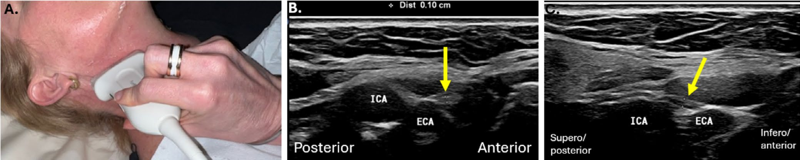

Respuesta clínica corta
¿Qué referencias ayudan a localizar el nervio hipogloso?
La bifurcación carotídea, arterias carótidas interna y externa, vena yugular interna, arteria lingual y región submandibular guían su rastreo.
Dato claveMapa extracraneal · revisión técnica
La revisión ofrece un mapa reproducible del trayecto extracraneal y sus relaciones vasculares, pero no establece sensibilidad, especificidad ni criterios de neuropatía del hipogloso.
Observado
Qué encontró y cómo interpretarlo
La revisión integra anatomía seccional, posición de sonda, Doppler y seguimiento longitudinal en una secuencia útil.
La continuidad y las relaciones vasculares son más sólidas que una imagen puntual para identificar el nervio.
La ausencia de búsqueda sistemática y de una cohorte impide estimar reproducibilidad o rendimiento diagnóstico.
Atlas del artículo
Imágenes para entender el procedimiento
Estas figuras proceden del artículo original y se reproducen con licencia abierta verificada. Se muestran por su utilidad anatómica o técnica, no como prueba aislada de diagnóstico o eficacia.

El panel relaciona la colocación de la sonda con el trayecto del nervio junto a las carótidas.
Cómo leerlaEs una guía anatómica y no un criterio de neuropatía ni de indicación intervencionista.
Fenech M y colaboradores. Figura reproducida bajo licencia CC BY 4.0; consulte el artículo original. · Fuente · Licencia CC BY.
Procedimiento del artículo
Rastreo del hipogloso desde la carótida a la lengua
La técnica comienza cerca de la bifurcación carotídea, reconoce el cambio entre segmentos horizontal y vertical y sigue el nervio hacia la región submandibular con Doppler para confirmar vasos.
- Nervio
- XII par craneal
- Clave
- Bifurcación carotídea
- Confirmación
- Doppler color
- 01
Segmento proximal
Colocar el transductor transversal en el cuello alto y localizar el nervio entre o alrededor de los vasos carotídeos.
- Referencias
- Carótida interna, carótida externa y yugular interna.
- Lectura
- Usar Doppler para separar el nervio de vasos pequeños.
- 02
Segmento distal
Seguir el trayecto hacia anterior y caudal hasta región submandibular y arteria lingual.
- Referencias
- Digástrico, hiogloso, glándula submandibular y arteria lingual.
- Lectura
- Confirmar continuidad; una estructura aislada no basta para identificar el nervio.
Protocolo reconstruido de forma prudente desde el texto completo y sus figuras. Sirve para comprender la adquisición y no sustituye formación, razonamiento clínico ni supervisión.
Aplicabilidad
Qué significa clínicamente
Usar Doppler y continuidad anatómica para reducir falsos reconocimientos.
Documentar el segmento visualizado y no inferir función nerviosa desde la morfología aislada.
Límite
Qué no permite afirmar
Revisión narrativa sin método sistemático.
Sin fiabilidad entre operadores.
Sin pacientes con lesión confirmada ni exactitud diagnóstica.
Contexto
¿Se parece a tu paciente?
- Población estudiada
- Síntesis anatómica e imagenológica del nervio hipogloso extracraneal; no incluye una cohorte de exactitud diagnóstica.
- Diseño
- Revisión narrativa anatómica y técnica
- Resultado evaluado
- Trazabilidad del trayecto y referencias vasculares
Fuente primaria
Lee el estudio, no solo nuestro análisis
Fenech M, Gallagher J, Wishart LR, Berry C, Foster-Greenwood M. Sonographic Anatomy and Imaging of the Extracranial Component of the Hypoglossal Nerve. J Med Radiat Sci. 2025;72(4):417-429. doi: 10.1002/jmrs.70010
Responsabilidad editorial
Francisco José Extremera García
Fisioterapeuta colegiado ICPFA 4288 · Osteópata D.O.
Creador y responsable editorial de FisioLógico
- Última revisión
- Conflictos de interés
- Ninguno declarado.